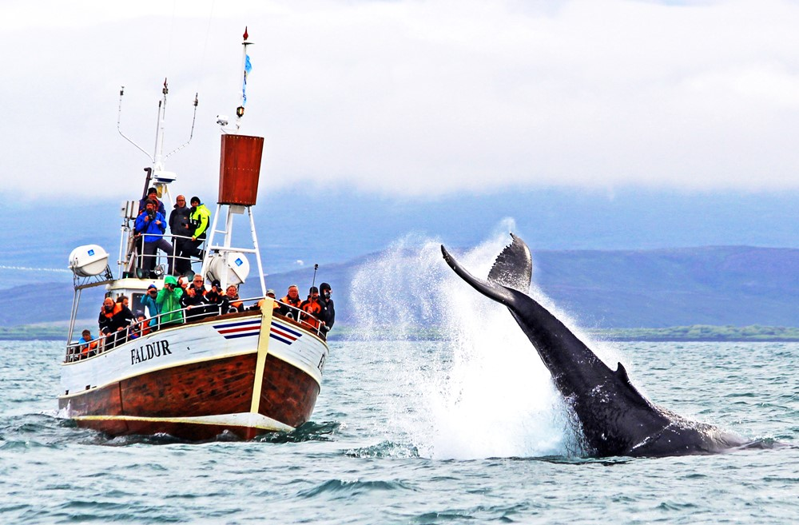

Det mesta som är traditionellt från Island inkluderar fisk, mejeriprodukter, potatis och lamm.
Det isländska kökets ursprung har sina rötter i det Skandinaviska köket från vikingatiden. Idag har man dock involverat
mat från hela världen och det finns gott om restauranger som serverar internationell mat utöver isländsk mat.
Många restauranger har också specialiserat sig på fisk & skaldjur med hög fokus på kvalité istället för att ha fokus på
att det ska tillagas på traditionellt vis. Men det finns även traditionella restauranger som tillagar maten på samma vis
som man gjort under hundratals år.

Att göra
Island har ett rikt paket av upplevelser, såväl för den stadstokige som för den naturälskande.
Varför inte ge sig ut på ett valäventyr, eller upptäcka den magiska naturen med geishor och varma källor, för att sedan
avsluta dagen på en av Islands häftiga klubbar.
Boenden
Island erbjuder hotell för alla smaker, såväl lyxhotell som mysiga vandrarhem, allt med excellent service och kunden i
fokus.
Varför inte blanda er resa med det bästa av 2 världar? Spendera några nätter på Islands häftiga buuble-hotell, där ni
verkligen får komma naturen nära och leva ett riktigt friluftsliv, en upplevelse för livet. För att sedan avsluta resan
med några lyxiga nätter på Grand hotell, där ni blir överrösta av bekvämlighet.